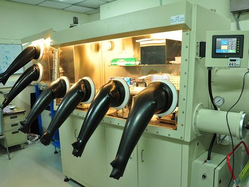
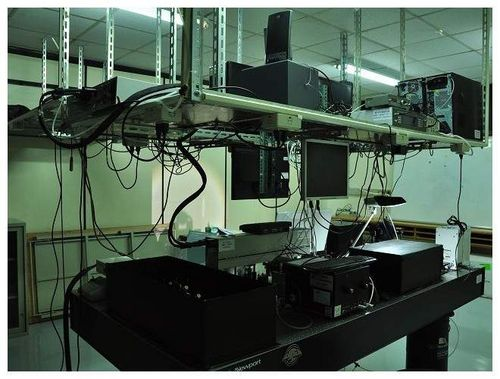

Facilities
Fabrication and Measurement Facilities
We maintain a wide variety of facilities for fabrication and measurement of photonic and electronic materials and devices.

Fabrication
Room 319 and 524B, MSE building, NTHU
Vacuum evaporator with N2 glove box
Sputter
Spin coater (one in N2 glove box and one in air)
Hood
Temperature gradient sublimation system
Deionized water system
Microbalance
Humidity cabinets
Dispenser, UV lamp for encapsulation
Blade/Bar coater
Sputter
Spin coater (one in N2 glove box and one in air)
Hood
Temperature gradient sublimation system
Deionized water system
Microbalance
Humidity cabinets
Dispenser, UV lamp for encapsulation
Blade/Bar coater

Measurement
Room 332-1, MSE building, NTHU
UV-Vis spectrometer with absorption/reflection option
Solar cell testing station
(Solar simulator, Semiconductor parameter analyzer)
Photoresponse measurement system
(Xe lamp, Monochromator, Current preamplifier,
Lock-in amplifier with chopper,
GPIB computer interface)
Multi-core CPU high-speed computer for
multi-physics and quantum chemistry simulation
EL testing station
(Semiconductor parameter analyzer,
Spectrophotometer with fiber collector,
Probe station,
Large area blue-enhanced Si-detector)
Time of flight measurement system
(oscilloscope, high power Q-switch pulsed laser,
2nd and 3rd harmonic generation optics,
cryostat, high voltage source)
Organic laser measurement system
Absolute quantum yield measurement system
Time resolved PL / EL measurement system
Transient absorption spectroscopy
Transient photocurrent / photovoltage spectroscopy
Solar cell testing station
(Solar simulator, Semiconductor parameter analyzer)
Photoresponse measurement system
(Xe lamp, Monochromator, Current preamplifier,
Lock-in amplifier with chopper,
GPIB computer interface)
Multi-core CPU high-speed computer for
multi-physics and quantum chemistry simulation
EL testing station
(Semiconductor parameter analyzer,
Spectrophotometer with fiber collector,
Probe station,
Large area blue-enhanced Si-detector)
Time of flight measurement system
(oscilloscope, high power Q-switch pulsed laser,
2nd and 3rd harmonic generation optics,
cryostat, high voltage source)
Organic laser measurement system
Absolute quantum yield measurement system
Time resolved PL / EL measurement system
Transient absorption spectroscopy
Transient photocurrent / photovoltage spectroscopy